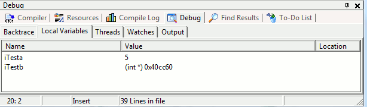
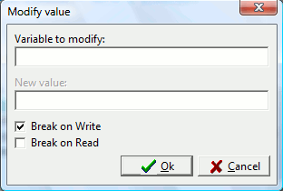

One of the most interesting aspects of debugging is the possibility to display the value of your variables at a given time. This way you can be sure your variable (e.g. a counter index) has the value you would expect.
wxDev-C++ is able to conveniently show you the contents of your classes, strings, structures/unions, arrays and other variables in the Debug Local Variables window:

Note that in the above window, iTesta
has already had its value set to "5", but iTestb
has not been set (the value will be random and depends on what
data is at that pointer at that given time).
Now keep this Local Variables
window open and re-start the debugging. You should be able to
"step through" the code after the breakpoint (discussed in the last section) and watch
the iTesta variable change from a random
value to "5".
Watchpoints
are like breakpoints that are triggered not by a particular line of
code, but by the change in value of a particular variable in code.
For example, let's say that you've got a large program and
think
that your variable iCount is being changed
unexpectedly.
You can set a regular breakpoint (at any line number), run
the
debugger to the breakpoint, and then add a watch to iCount.
The debugger will then always break whenever the value of iCount
changes.
To set a watchpoint, add a normal breakpoint to your code and run the debugger. On the Debug window, click on the Watch tab. Then, click anywhere within the Watch tab space. An Add Watch (shortcut : F4) menu should appear.
Once you select Add Watch, a dialog box should appear:

Type the name of your variable in the dialog, and press OK. If you select a word in the current source file and press F4, it will add a watch of the selected text without asking for a variable name. A breakpoint can be generated when the value of the variable is written, read, or both.
Once a watchpoint variable is set, it will continue to be monitored in future debugging runs. You can also modify the value of your watched variable at any time during debugging by right clicking on the variable name in the Debug Watch window and selecting Modify value. Note that you are changing this value outside of your source code. The next time you run the debug, the value you entered is lost and the program executes normally.